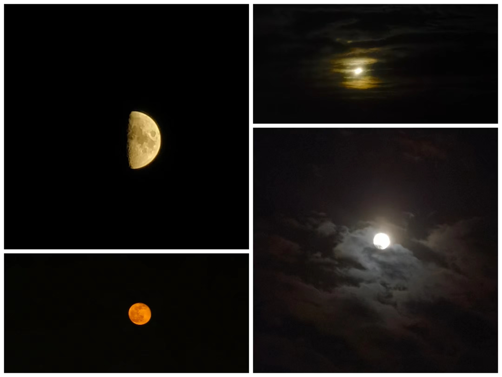

Moon Observation Log
The moon, as a symbol with profound significance, encompasses various cultural connotations and emotional meanings. In Chinese culture, the moon is associated with beauty, elegance, and auspiciousness, often appearing in poetry and literature.
However, as an observation log, perhaps we need to include some more scientific aspects.
During the process of revolving around the Earth, the Moon’s appearance from Earth changes due to variations in our perspective and the lunar surface’s rotation. This gives rise to phenomena such as the waxing and waning phases of the Moon.
In addition to the changes in shape, the color of the Moon also varies due to different atmospheric and cloud conditions. I have seen the Moon appear reddish, yellowish, and even greenish.
Many times, the Moon is surrounded by clouds and mist, creating a ethereal beauty, feeling as if it is floating in the sky. I love these moments and have captured many pictures with my phone. My phone can zoom up to 50x, allowing me to capture the shadows on the Moon. which is wonderful.
